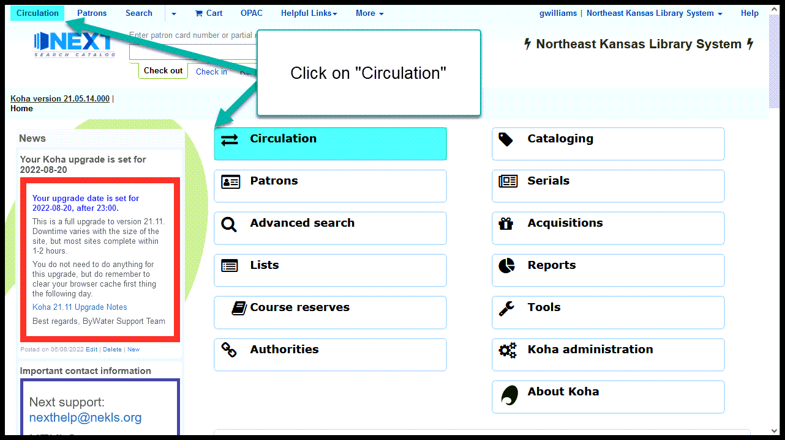
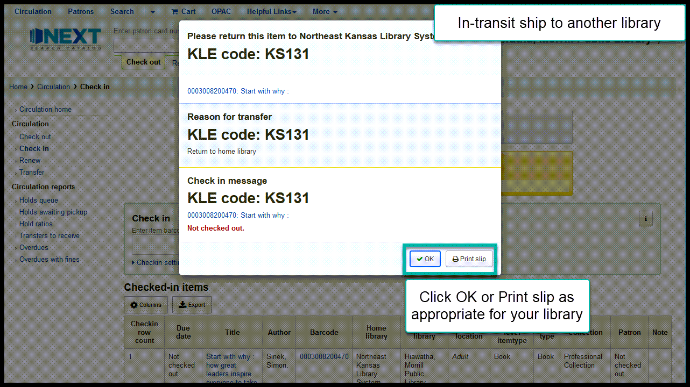

Checking items in¶
(AKA Checkin is your friend)
Overview of check-in¶
Checking items in accomplishes many things in Next Search Catalog:
- Check-in puts items that have been borrowed back into circulation
- Check-in removes “Lost” and “Missing” statuses from items that have been marked as “Lost” or “Missing”
- Check-in puts items into transit when they need to be shipped to other libraries
- Check-in takes items out of transit when they arrive at their destination
- Check-in triggers the different phases of the requests/holds process
- Check-in triggers the “Recently returned” shelving location process
- Check-in updates an items “Last seen” date to the current date
The bottom line is that, if you’re not sure what to do with an item, checking it in will get the system to tell you what to do with it.
Finding the Check-in menu¶
The check-in menu can be found on the circulation menu


The check-in menu can also be found by checking an item in using the flexible search box (which can be found at the top of almost every page).

After you enter a barcode number through “Check in” on the flexible search box, that item will be checked in and you will be taken to the check-in menu.


Checking in items¶
Normal check-in (borrowed item returned)¶
After the item is checked in, follow the procedures at your library for re-shelving the item.

Normal check-in (item not checked out)¶
After the item is checked in, follow the procedures at your library for re-shelving the item.

In transit (receiving an item from another library)¶
After the item is checked in, follow the procedures at your library for re-shelving the item.
In transit (ship to another library)¶
After the item is checked in, follow the procedures at your library for shipping the item to its destination.

Requested item (hold at this library)¶
After the item is checked in, follow the procedures at your library for requested items.

Requested item (ship to another library)¶
After the item is checked in, follow the procedures at your library for shipping the item to its destination.

Lost/missing status removal¶
After the item is checked in, follow the procedures at your library for handling lost/missing items.

Damaged item status exception¶
After the item is checked in, follow the procedures at your library for items with a damaged status.

Withdrawn item exception¶
After the item is checked in, follow the procedures at your library for withdrawn items.

Barcode not found¶
After the item is checked in, follow the procedures at your library for items that are not in the catalog.